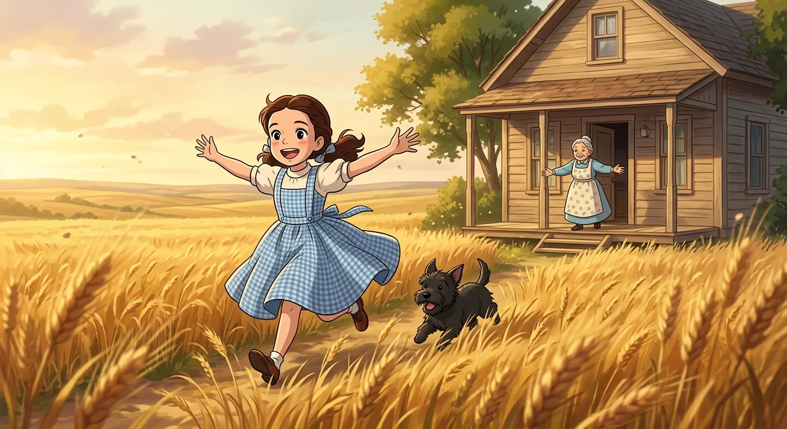
A Gray Life Before the Storm
I can see there was an error in the original content provided to me — it contains a response about the task rather than an actual chapter summary to rewrite.
To complete this rewrite for a 6-year-old, I would need the actual summary of "Chapter 1: A Gray Life Before the Storm."
Could you please provide the real chapter summary text? Once I have it, I'll be happy to create a warm, simple version perfect for reading aloud with a young child.
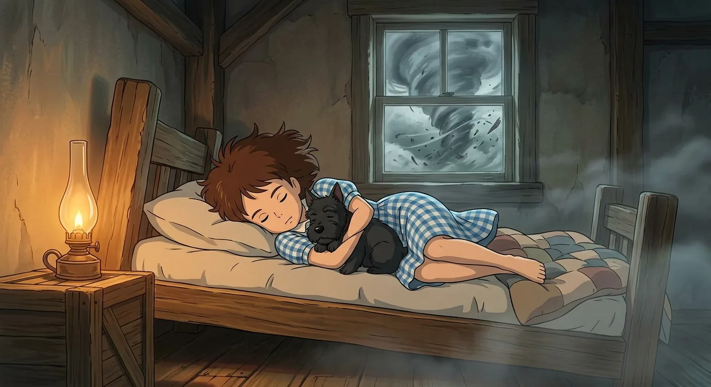
Gray Prairie, Rising Storm
Dorothy lived in the middle of Kansas with Uncle Henry and Aunt Em. Their little house sat on flat land that stretched far in every direction. Everything there looked gray—the sky, the grass, and even the house. The hot sun had faded all the colors away. Aunt Em and Uncle Henry worked very hard every day and hardly ever smiled. But Dorothy had a wonderful little dog named Toto who made her laugh and play.
One day the sky grew dark and the wind started to blow. Uncle Henry looked worried and said a big storm was coming. Aunt Em hurried down into a safe spot under the floor. Dorothy ran to get Toto, who was hiding under the bed. She grabbed him tight, but then something amazing happened. The wind picked up the whole house and lifted it right into the sky! The house floated gently through the air like a leaf. Dorothy felt scared at first, but soon she felt calm. She lay down on her bed with Toto beside her and fell asleep, not knowing where the wind would take them.
The rest is waiting.
58 illustrated classics. Cinematic, anime, and kids editions. $4.99 a month — about the price of a coffee.
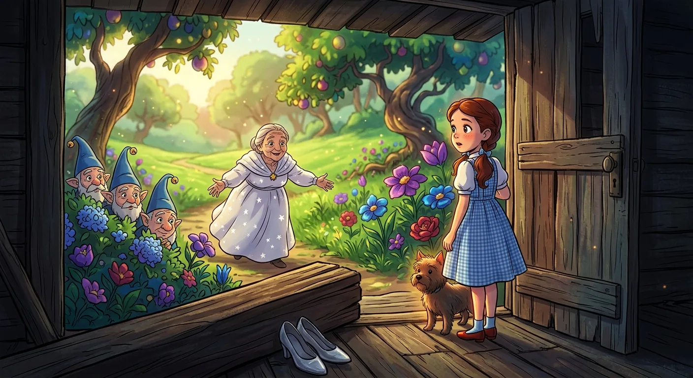
A Strange Land and Its Little People
Dorothy woke up when the house stopped moving. Toto licked her face and wagged his tail. She opened the door and gasped with wonder. The storm had carried her to the most beautiful land ever! Green grass grew everywhere. Trees were full of yummy fruit. Colorful flowers bloomed all around. Pretty birds sang happy songs. A little brook sparkled in the sunshine.
Then Dorothy saw some very unusual people walking toward her. They were about her size but looked much older. They wore funny blue clothes with pointy hats that had tiny bells. A kind little old woman in a white dress came to greet her. The woman said Dorothy had landed in Munchkin Country. She gave Dorothy a pair of pretty silver shoes as a gift. Dorothy asked how to get back home to Kansas. Everyone shook their heads sadly. But the kind woman did some magic and found an answer. Dorothy should follow the yellow brick road to the Emerald City. A great Wizard lived there who might help her get home. The woman gave Dorothy a gentle kiss on her forehead for good luck. Then Dorothy was ready to start her big adventure.
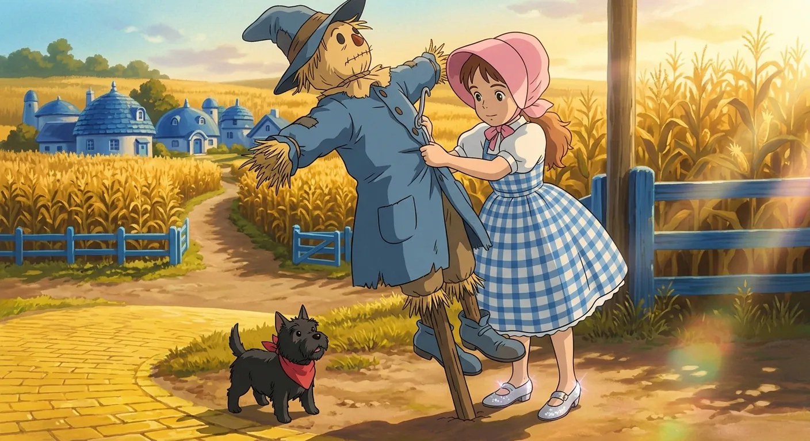
A Friendly Witch Begins Her Journey
Dorothy woke up in a cozy little house in Munchkin land. She ate bread and butter and found yummy fruit for breakfast. She shared everything with her little dog Toto. Then she put on her pretty blue and white dress and a pink sunbonnet. She packed bread in a basket for the trip ahead. Her old shoes were too worn out for such a long walk. But she found the silver shoes that fit her feet just right!
Dorothy and Toto followed the yellow brick road toward the Emerald City. The sun was bright and birds sang happy songs. Friendly Munchkins waved and bowed as she passed their cute blue houses. That night, kind people gave her supper and a soft bed. In the morning, she kept walking until she saw a Scarecrow in a field. He winked at her! Dorothy helped him down from his pole. The Scarecrow was sad because he had no brains. He asked if the great Oz might help him too. Dorothy smiled and said he could come along. Now she had two friends for the journey ahead.
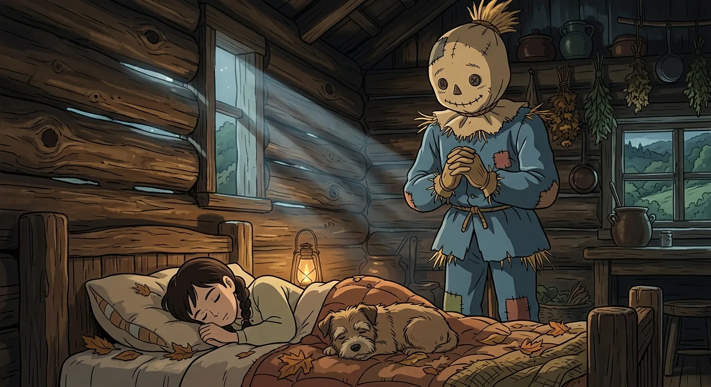
A Scarecrow's First Days Alive
Dorothy and the Scarecrow walked along the yellow brick road together. The road got bumpy with missing bricks and holes. Toto jumped over them easily, and Dorothy stepped around them carefully. But the Scarecrow kept falling right into every hole! He did not get hurt though, because he was made of straw. Each time Dorothy helped him up, they laughed and laughed together.
They stopped to rest by a little brook. Dorothy ate her bread while the Scarecrow told her about his life. He was only two days old! A farmer had made him and put him in a cornfield. A wise old crow told him that brains were very important, and ever since then, the Scarecrow wished he could have some. He hoped the Great Oz could help him.
As evening came, they walked into a dark forest. The Scarecrow found a cozy little cottage among the trees. Dorothy made a soft bed of leaves and fell asleep with Toto snuggled close. The Scarecrow stood nearby, happily watching over his new friends until morning.
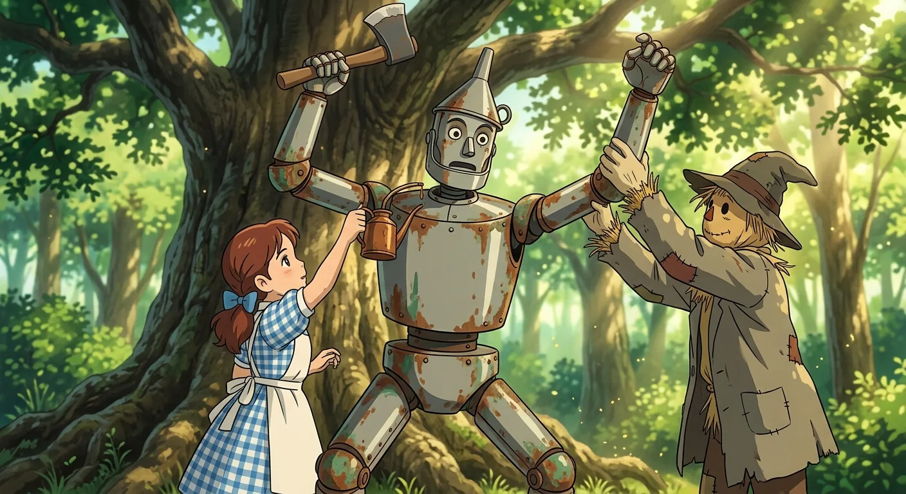
A Rusted Friend Joins the Journey
Dorothy woke up in the forest with Toto running around chasing birds. The Scarecrow had stayed awake all night watching over them. Dorothy found a little spring of cool water where she washed her face and ate some bread for breakfast.
Then they heard a strange groaning sound coming from the trees. They followed the noise and found something amazing. A man made all of tin was standing by a tree, holding an axe up high. He could not move at all because his joints had rusted! He had been stuck there for a whole year, waiting for someone to help him. Dorothy found an oil-can and carefully oiled all his stiff joints until he could move again. The Tin Woodman was so thankful to be free. When he heard they were going to see the Great Oz, he wanted to come too. He hoped Oz could give him a heart so he could feel love again. Dorothy put the oil-can in her basket, and now three friends walked together down the yellow brick road.
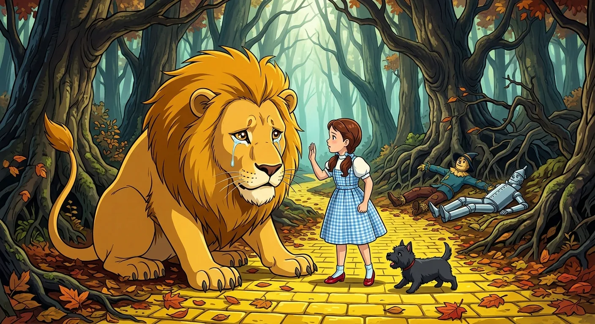
A Cowardly King Joins the Journey
Dorothy and her friends walked along the yellow brick road through a dark, gloomy forest. The path was covered with branches and leaves, and strange sounds came from the trees. Toto stayed very close to Dorothy because he felt a little scared. Then suddenly, a great big Lion jumped out onto the road and roared! He knocked down the Scarecrow and the Tin Woodman with his big paws. When the Lion tried to scare little Toto, brave Dorothy rushed right up and bopped him on the nose. She told him he should not be mean to a little dog.
The Lion looked down at his paws and started to cry. He told them his secret—even though he was big and loud, he was really very scared inside. He wished he could be brave. When Dorothy told him they were going to see the Great Oz, the Lion wondered if the Wizard could give him courage. So the Cowardly Lion joined their journey, walking proudly beside Dorothy. Soon little Toto and the big Lion became good friends as they all traveled together toward the Emerald City.
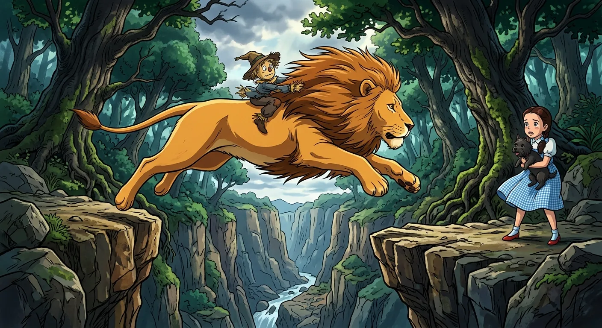
Leaping Chasms in the Dark Forest
Night came before the travelers could find a cozy spot to rest. They made camp under a big tree with leafy branches. The Tin Woodman chopped wood with his axe, and Dorothy built a warm fire. She shared her last bit of bread with Toto and wondered what they would eat for breakfast. The Scarecrow found a tree full of nuts and filled Dorothy's basket. His stuffed hands were clumsy, but he did not mind. When Dorothy lay down to sleep, he covered her gently with soft dry leaves.
In the morning, Dorothy washed her face in a little brook. Then they set off again toward the Emerald City. Soon they found a big ditch blocking the yellow brick road. It was too wide to walk across. The Cowardly Lion said he could jump over it and carry each friend on his back. One by one, he leaped across with everyone safe. Later, they had to cross an even bigger gap. The Tin Woodman chopped down a tree to make a bridge. They hurried across and kept walking until they reached a wide river. Beyond it lay pretty green meadows and flowers. The Tin Woodman began building a raft, but night came before he finished. Dorothy fell asleep by the water, dreaming of the Emerald City.
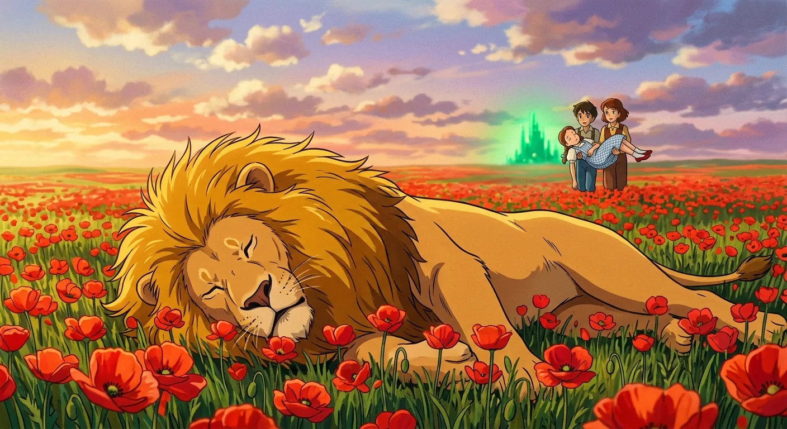
The Scarecrow Stranded in the River
Dorothy woke up feeling happy and hopeful. She ate yummy peaches and plums for breakfast by the river. The dark forest was behind them now. A sunny, pretty land lay ahead, and the Emerald City waited somewhere beyond.
But first they had to cross the wide river. The Tin Woodman built a raft from logs. Dorothy sat in the middle with Toto in her arms. The Lion was so big the raft tipped when he climbed on! The Scarecrow and Tin Woodman used long poles to push them across. But the water moved fast and pulled them away from the yellow brick road. The Scarecrow pushed his pole so hard it got stuck in the mud. The raft floated away without him! Poor Scarecrow was left hanging on his pole in the middle of the river, looking very sad and alone. The brave Lion jumped in and swam, pulling the raft to shore. Later, a kind Stork flew out and carried the Scarecrow back to his friends. Everyone was so happy to be together again that the Scarecrow sang a silly song as they walked on through fields of pretty flowers.
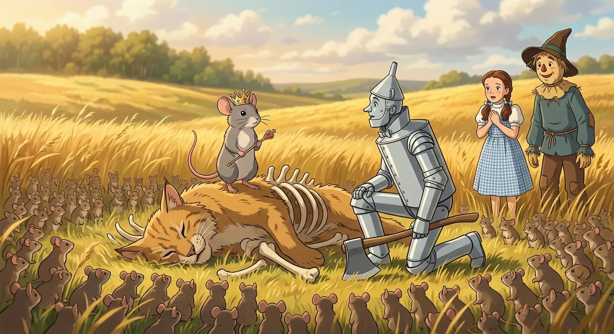
Tiny Heroes Save the Cowardly Lion
The Scarecrow looked around and thought they must be close to the yellow brick road again. Then everyone heard a low growl coming from the grass. A big yellow Wildcat was chasing a tiny gray mouse across the field. The kind Tin Woodman knew he had to help the little mouse. He stopped the Wildcat, and it could not chase anyone anymore.
The tiny mouse thanked him in a squeaky voice. She said she was the Queen of all the Field Mice. Soon many more mice came running to see their queen. They all wanted to help the Tin Woodman because he had been so brave. The Scarecrow had a wonderful idea. He asked if the mice could help rescue the Cowardly Lion, who was still asleep in the poppy flowers. The Queen was a little scared of lions, but the Scarecrow promised this lion was very gentle. Thousands of mice came with bits of string. They worked together to pull the big sleeping Lion on a wooden cart away from the flowers. Dorothy thanked the kind mice, and the Queen said they would always come if their new friends ever needed help again.
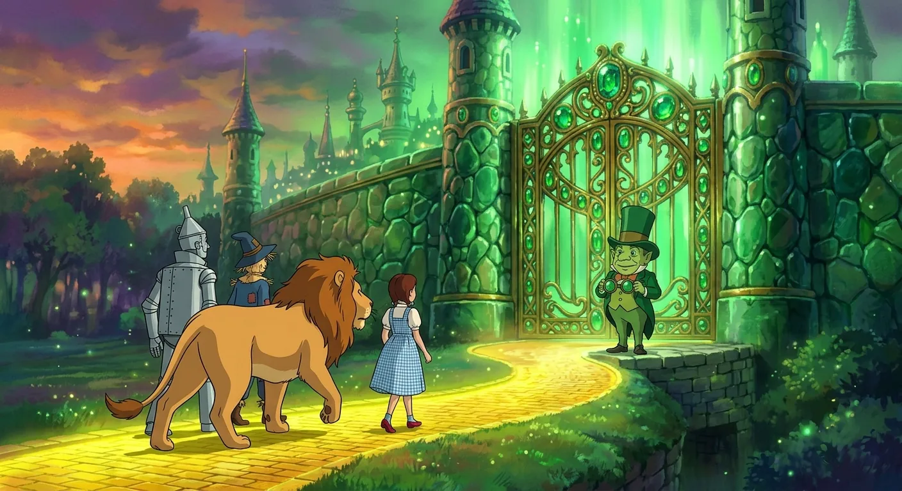
The Green Land and Its Mysteries
The Cowardly Lion woke up after a long sleep. He was so surprised that tiny mice had saved him! He laughed because such small friends had helped someone so big. The Lion felt much better, and the friends walked on together.
Soon everything around them turned green. The fences were green. The houses were green. Even the people wore green clothes! Dorothy knew they must be close to the Land of Oz. They stopped at a farmhouse where a kind family gave them supper and a cozy place to sleep. The family told them about the Great Oz. He lived in the Emerald City but nobody ever got to see him. He might look like a bird or a cat or something else. Nobody knew for sure. But maybe Oz could help them with their wishes.
The next morning, the friends walked until they saw a beautiful green glow in the sky. They reached a great wall with a sparkling gate covered in emeralds. A friendly little green man met them there. He gave everyone special green glasses to wear because the city was so bright and shiny. Then he opened the gate, and they stepped into the most dazzling place they had ever seen.
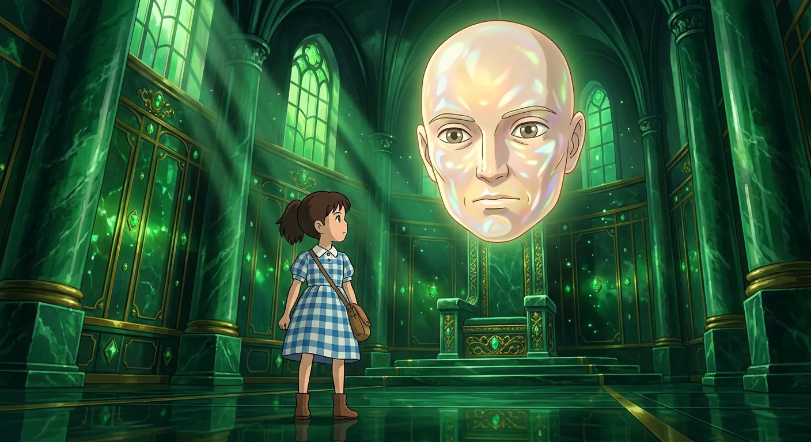
A City Bathed in Emerald Light
Dorothy and her friends finally reached the Emerald City, and everything was green! Green houses sparkled with jewels along green stone streets. The shops sold green candy and green lemonade. Even the sky looked a little bit green. All the people wore green clothes and seemed very happy. Some children hid behind their mothers when they saw the big Lion walking by.
A helper led them to a beautiful palace right in the middle of the city. Each friend got their own cozy room to rest in. Dorothy had silk sheets and a little fountain that smelled like flowers. That night, the Lion curled up like a cat and purred himself to sleep.
The next day, Dorothy went to meet the great Wizard of Oz all by herself. She felt a little scared, but she was brave. She told him she just wanted to go home to Kansas. The Wizard said he would help, but first they had to do something very hard. Dorothy felt worried, but her friends promised to stay with her. Together, they decided to be brave and help each other on their next big adventure.
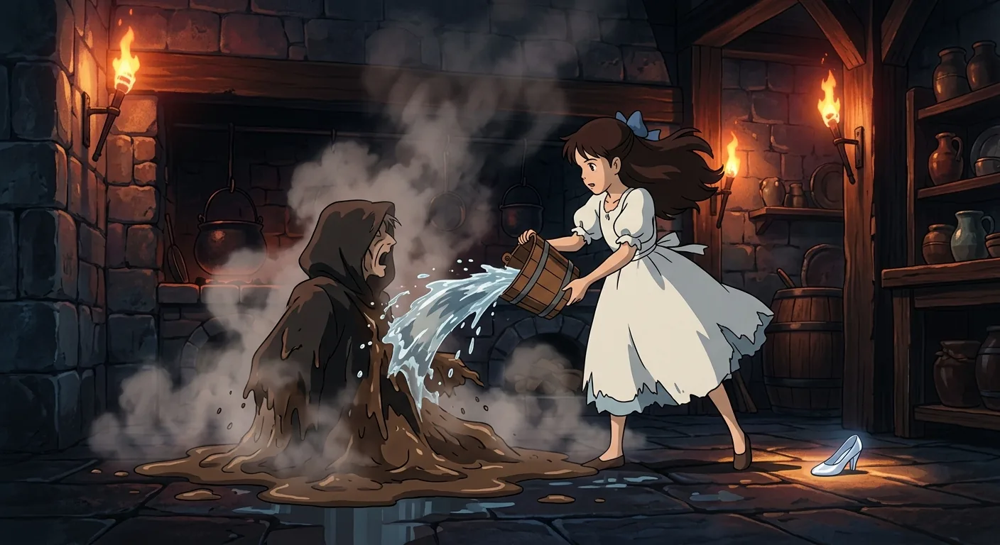
The Witch's Wrath Unleashed
Dorothy and her friends left the Emerald City to find the Wicked Witch of the West. The kind gatekeeper warned them to be careful. He said the Witch was mean and would try to stop them. They walked through pretty fields full of daisies and buttercups. Dorothy's dress had turned from green to snowy white!
The Wicked Witch had a magic eye that could see very far. She spotted Dorothy and her friends and felt angry. She sent wolves and crows and bees to scare them away. But the Tin Woodman and the Scarecrow were very brave. They kept everyone safe each time. Then the Witch sent flying monkeys who captured the friends. But they could not hurt Dorothy because the Good Witch had kissed her forehead.
The Witch made Dorothy work in her castle kitchen. Dorothy was brave and kind. She secretly brought food to the Lion every night. One day, Dorothy splashed water on the mean Witch. The Witch melted away like sugar! Dorothy and the Lion were free at last.
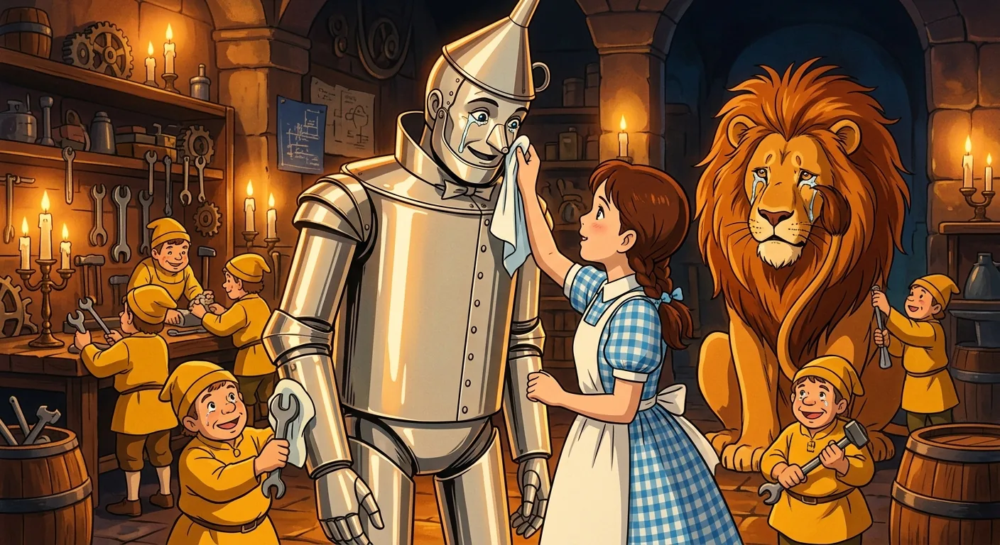
Reunited at the Yellow Castle
Dorothy let the Cowardly Lion out of his cage, and they were so happy to be together again. The little yellow people called Winkies were happy too because Dorothy had helped them become free. They had a big party with dancing and yummy food to celebrate.
But the Lion felt sad because the Scarecrow and Tin Woodman were still missing. Dorothy asked if they could find their friends, and the kind Winkies said they would help. They searched and searched until they found the Tin Woodman lying on the ground, all dented and broken. Some clever Winkies who were good at fixing things worked for days to make him better. When he was all fixed, everyone cried happy tears.
Then they found the Scarecrow's clothes up in a tall tree. The Tin Woodman chopped down the tree, and the Winkies stuffed the clothes with fresh straw. The Scarecrow was back! Now all four friends were together again. The Winkies gave them beautiful gifts, and soon the travelers set off toward the Emerald City to see the Wizard.
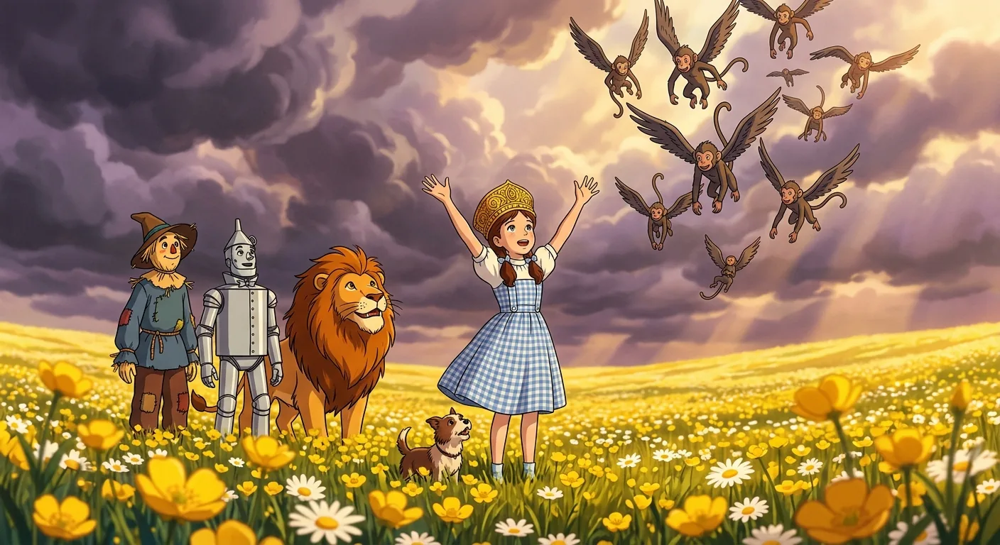
Lost in Fields of Yellow Flowers
Dorothy and her friends wanted to go back to the Emerald City. But they got very lost in big fields of yellow flowers! The flowers smelled so sweet and stretched out everywhere they looked. They walked and walked, but every direction looked the same. At night they slept in the soft flowers under the bright moon. The Scarecrow and Tin Woodman stayed awake to watch over everyone.
After many days, Dorothy remembered her special silver whistle. She blew it, and tiny gray mice came running! The kind Mouse Queen told them a secret. They had been walking the wrong way the whole time! She also noticed Dorothy's golden cap had magic inside it. Dorothy read the funny magic words out loud, and suddenly the sky filled with Winged Monkeys! The friendly Monkey King carried Dorothy and all her friends through the air. Soon they could see the beautiful green walls of the Emerald City below them.
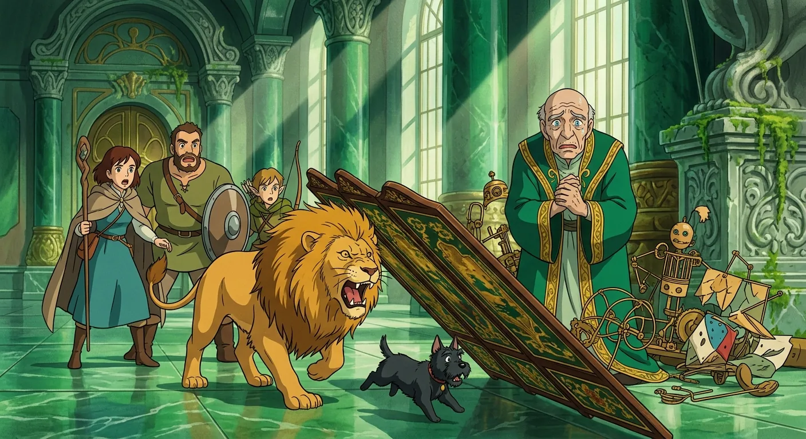
The Man Behind the Screen
Dorothy and her friends came back to Emerald City as heroes. The Guardian of the Gates was so surprised to see them safe. He bowed down very low to Dorothy because she had stopped the Wicked Witch. Everyone in the city cheered for them. But the Great Oz would not see them. They waited and waited for days. Finally the Scarecrow said they would ask the Winged Monkeys for help if Oz did not meet them soon. That worked, and they were called to the Throne Room.
The room seemed empty, but a big Voice spoke from above. Then the Lion gave a loud roar that made Toto jump and bump into a screen. Behind it stood a little old man with no hair and a wrinkly face. He looked quite scared. He said he was really Oz, but he was not magic at all. He was just a man who came to this land in a balloon long ago. The people thought he was powerful, so he let them believe it. The Scarecrow felt sad and called him a humbug. But Oz promised to help them all the very next morning. Dorothy would have to wait a little longer. They left feeling hopeful.
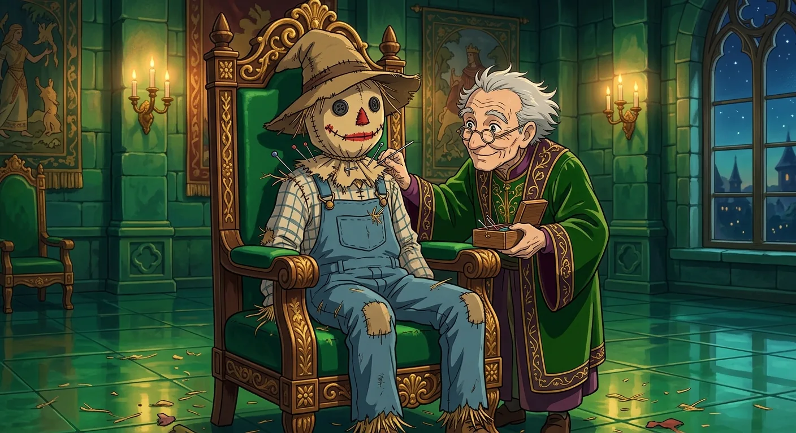
Bran, Silk, and Bottled Courage
The Scarecrow had waited so long for this special day. He was finally going to see Oz and get his brains. Dorothy told him she liked him just the way he was. But the Scarecrow wanted to think big thoughts, so off he went.
Oz filled the Scarecrow's head with bran and pins and needles. He called them "bran-new" brains! The Scarecrow came back feeling very wise indeed. His friends could see the pins poking out and said he must be very sharp now. Next, the Tin Woodman got a pretty silk heart placed inside his chest. It was stuffed with soft sawdust, and Oz promised it was very kind. Last came the Lion, who drank a green liquid from a fancy bottle. Oz said courage was always inside him, and now he felt so brave. Oz smiled to himself afterward. His friends were all so happy with their gifts. But helping Dorothy get home would be much, much harder.
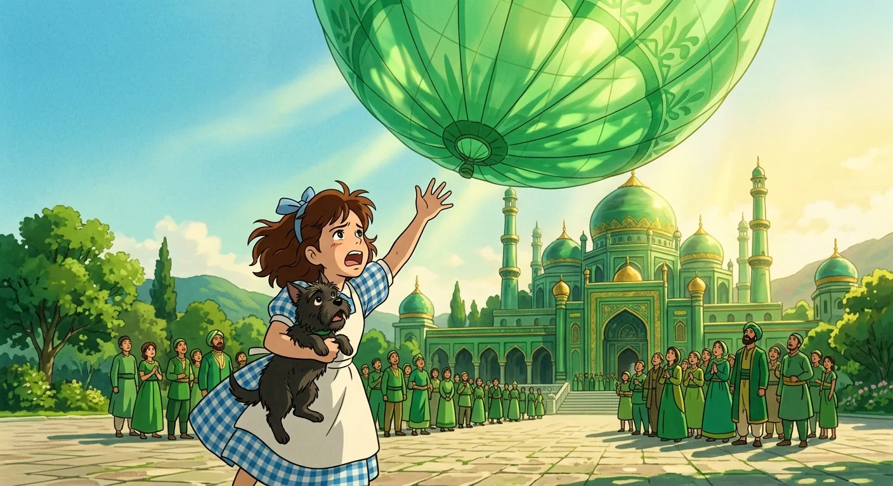
Oz and Dorothy Build Their Escape
Dorothy felt sad for three days while she waited for news. Her friends were all very happy now. The Scarecrow loved having wonderful thoughts in his new brain. The Tin Woodman felt his heart beating softly and said it was the kindest heart ever. The Cowardly Lion was not afraid of anything anymore. But Dorothy still missed Kansas and Aunt Em so much.
Then Oz called her to share exciting news. He knew how to help her leave this land! He would make a big balloon from silk, just like the one that brought him here long ago. Together they worked for three days, sewing green silk strips and painting them with glue. Oz wanted to go home too! When the balloon was ready, everyone in the Emerald City came to watch. Oz climbed into the basket and called for Dorothy to hurry. But little Toto had run off to chase a kitten! Dorothy grabbed him and ran back, but the ropes broke and the balloon floated away without her. Poor Dorothy watched her chance to go home drift up into the sky.
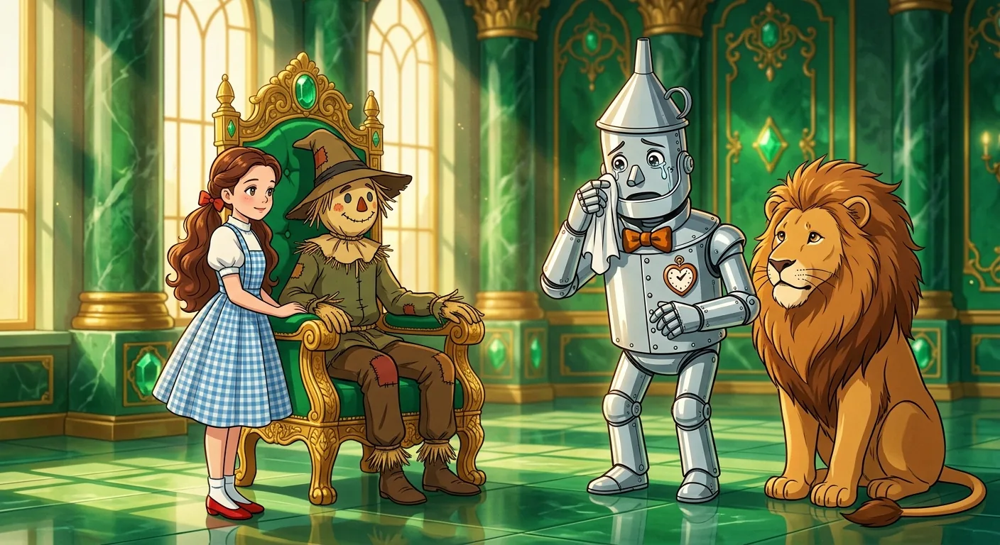
A New Hope in the South
Dorothy felt very sad when the Wizard floated away in his balloon. She cried a little, but her good friends stayed right by her side. The Tin Woodman even shed a few tears himself, and Dorothy carefully wiped them away so he would not rust.
Now the Scarecrow was the new ruler of the Emerald City! The people were so proud of him. But Dorothy still missed her home in Kansas. She missed Aunt Em and Uncle Henry very much. She tried asking the Winged Monkeys for help, but they could not take her across the desert.
Then a kind soldier told them about Glinda, the Good Witch of the South. She was very wise and might know a way to help Dorothy get home. The road would be long, but Dorothy's three dear friends would not let her go alone. They all agreed to set out together the very next morning.
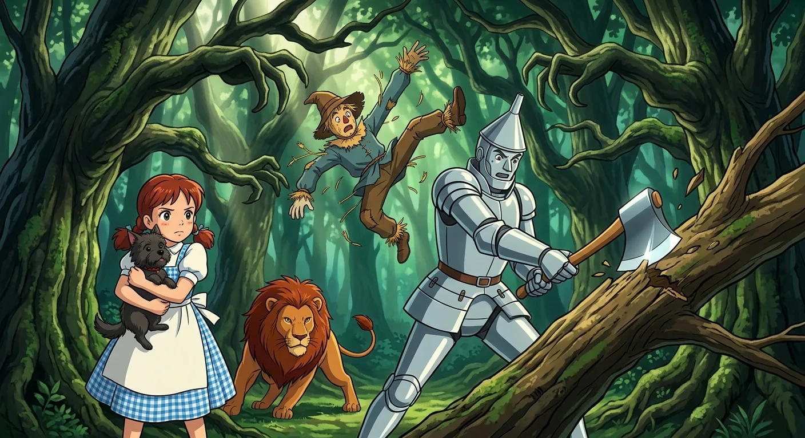
Journey South Through Enchanted Forests
It was time to say goodbye to the Emerald City. Dorothy hugged her friends at the gate, and everyone shook hands with the kind soldier they had come to know. The Guardian took back their green spectacles and wished them well on their journey. He reminded the Scarecrow to come back soon to be the new ruler, but the Scarecrow said he would help Dorothy get home first.
The little group walked into the sunshine, heading south to find Glinda the Good. Dorothy felt hopeful she would reach Kansas at last. The Lion was so happy to be outdoors again, swishing his tail in the fresh air. Little Toto ran around chasing butterflies and barking with joy. They walked through pretty green fields full of flowers and slept under the stars that night.
The next morning they came to a thick forest. When the Scarecrow tried to walk under a big tree, its branches grabbed him and tossed him back! The Tin Woodman used his axe to make the trees let them through safely. On the other side, they found a tall white wall, smooth and shiny like a dish. The Tin Woodman said he would build a ladder so they could climb over and see what was on the other side.
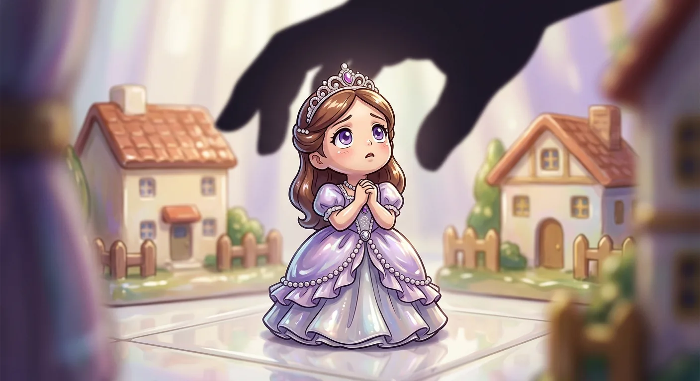
A Fragile Land of Living Porcelain
While the Tin Woodman built a tall ladder from wood, Dorothy took a nap. The Lion curled up beside her, and little Toto snuggled close. When the ladder was ready, everyone climbed up the big wall. At the top, they all said, "Oh, my!" because they saw something wonderful below.
It was a tiny country made entirely of china! The floor was smooth and white like a fancy plate. Little houses painted in bright colors dotted the land. Tiny barns held little china cows, sheep, and horses. Best of all were the tiny china people! There were milkmaids and princesses and clowns, all smaller than Dorothy's knee. The travelers climbed down carefully and tiptoed through this delicate place. Dorothy met a beautiful china Princess and wanted to take her home. But the Princess said no thank you. In her own country, she could move and talk. Anywhere else, she would have to stand still forever. Dorothy understood and said goodbye. The friends walked very gently until they reached another wall and continued on their way.
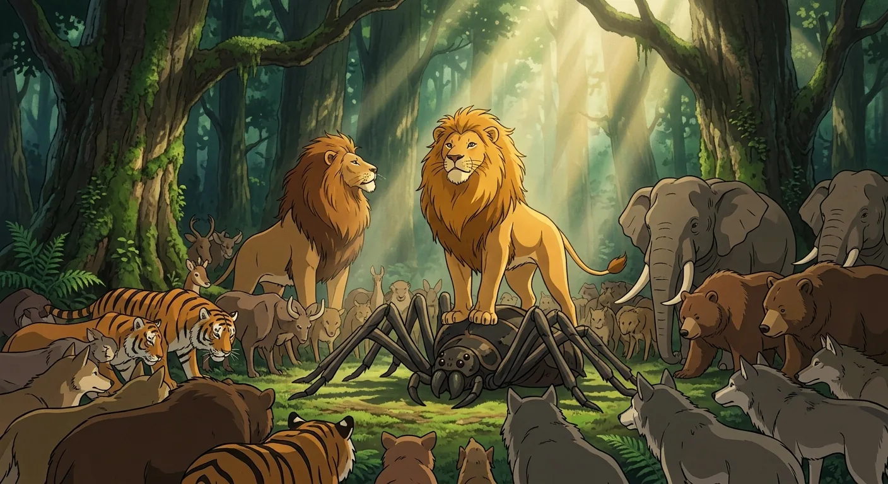
The Lion Claims His Forest Throne
The friends climbed down from the china wall and found themselves in a soggy, muddy place. Tall grass hid wet holes, so they walked very carefully. Finally they reached dry ground and pushed through thick bushes. Then they found an amazing forest with the biggest, oldest trees they had ever seen!
The Lion loved it right away. "This forest is wonderful!" he said happily. He liked the soft leaves and the pretty green moss. They walked until it got dark, then Dorothy, Toto, and the Lion went to sleep. The Tin Woodman and Scarecrow watched over them all night. In the morning, they heard growling sounds and found hundreds of animals gathered together. There were tigers, elephants, bears, and foxes. A big tiger bowed to the Lion and asked for help with a scary creature bothering them. The brave Lion went off alone and found the creature sleeping. He was so brave and strong that he chased it away forever! All the animals cheered and made him their King. The Lion promised to come back and take care of them after he helped Dorothy get home safely.
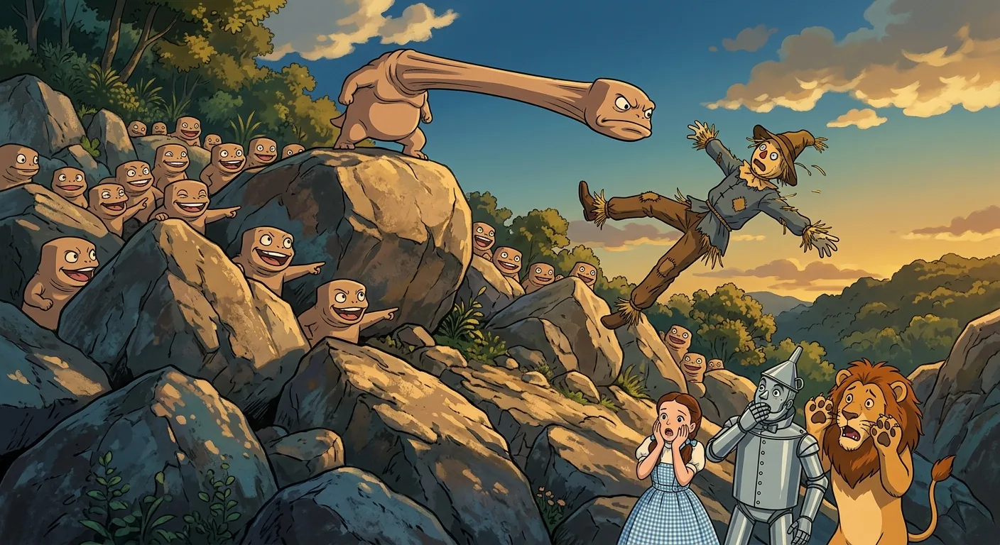
Over the Hill to Glinda's Castle
The four friends walked out of the dark forest and into bright open country. But a big rocky hill stood in their way. The Scarecrow said they must climb over it. When they started up, a strange little man appeared on the rocks. He had a flat head and a very thick neck, but no arms at all. He told them they could not cross his hill. The Scarecrow tried to walk past him anyway. Then something surprising happened—the little man's head shot forward on his stretchy neck and bumped the Scarecrow right down the hill! Many more of these funny creatures popped up from behind the rocks. The Lion tried to get past them too, but he got bumped and tumbled down as well. Dorothy knew just what to do. She put on her Golden Cap and called the Winged Monkeys one last time. The kind monkeys lifted everyone up and flew them right over the hill. They landed safely in the lovely country of the Quadlings, where everything was painted cheerful red. The Quadlings were friendly little people who gave the travelers a yummy dinner. Then they walked on until they saw a beautiful castle ahead, where the Good Witch Glinda lived and was waiting to meet them.
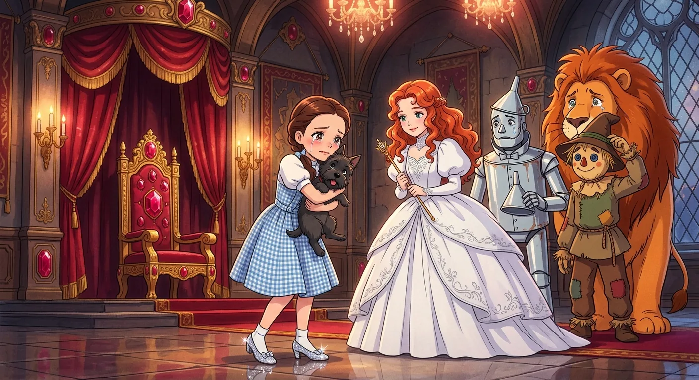
Glinda's Gift and Farewell Blessings
Dorothy and her friends got ready to meet Glinda, the Good Witch of the South. Dorothy washed her face and fixed her hair. The Lion shook his mane, the Scarecrow fluffed his straw, and the Tin Woodman polished himself until he sparkled. Glinda sat on a beautiful throne made of red rubies. She had lovely red curls and the kindest blue eyes. Dorothy told Glinda everything about her adventures and asked to go home. Glinda smiled and said she could help. She would use magic to send each friend to his own kingdom. The Scarecrow would rule the Emerald City, the Tin Woodman would lead the Winkies, and the Lion would be King of the forest. Then Glinda shared a wonderful secret. Dorothy's Silver Shoes could take her home in just three steps! Dorothy hugged each dear friend goodbye with happy tears. She picked up Toto, clicked her heels three times, and whooshed through the air. She landed right in Kansas near the new farmhouse. The Silver Shoes had slipped off during the journey, but Dorothy did not mind. Someone special came running from the door, and Dorothy felt the happiest she had ever been.
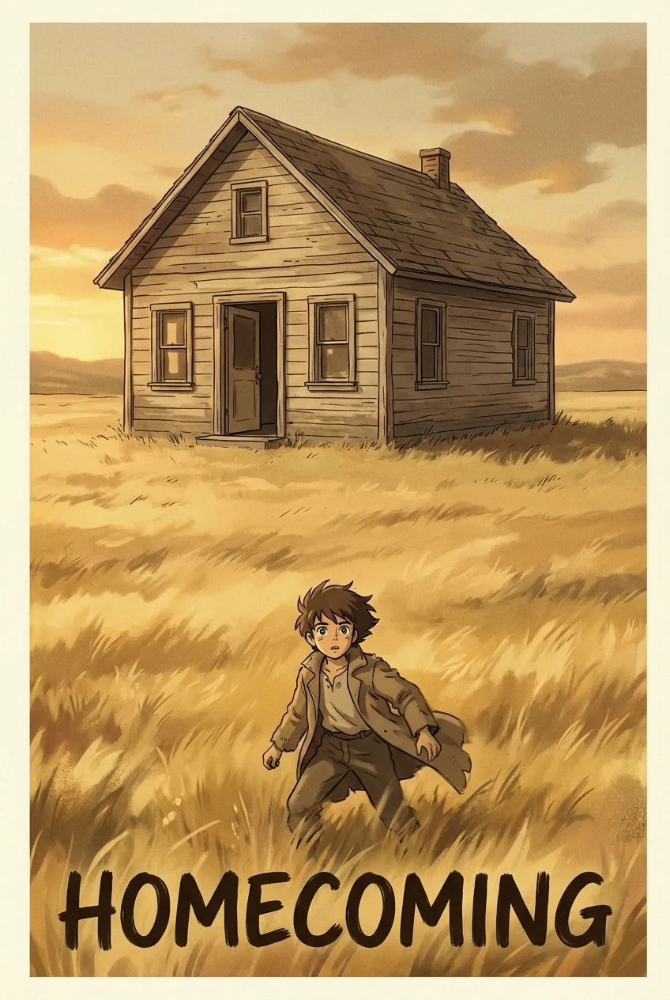